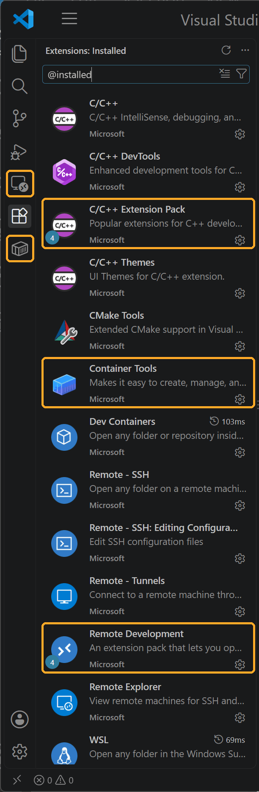
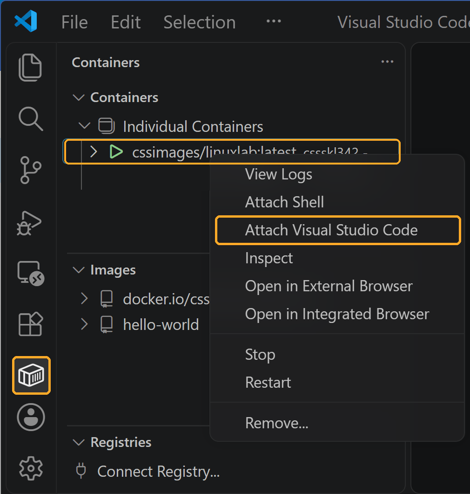
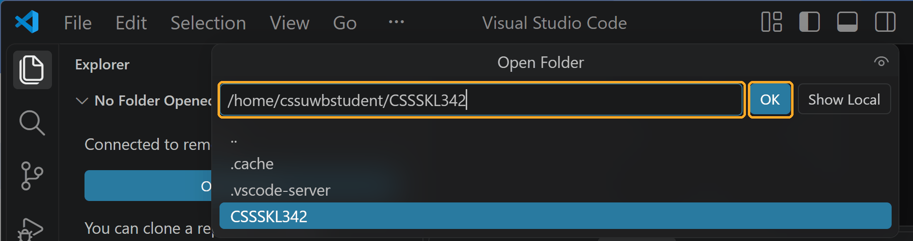
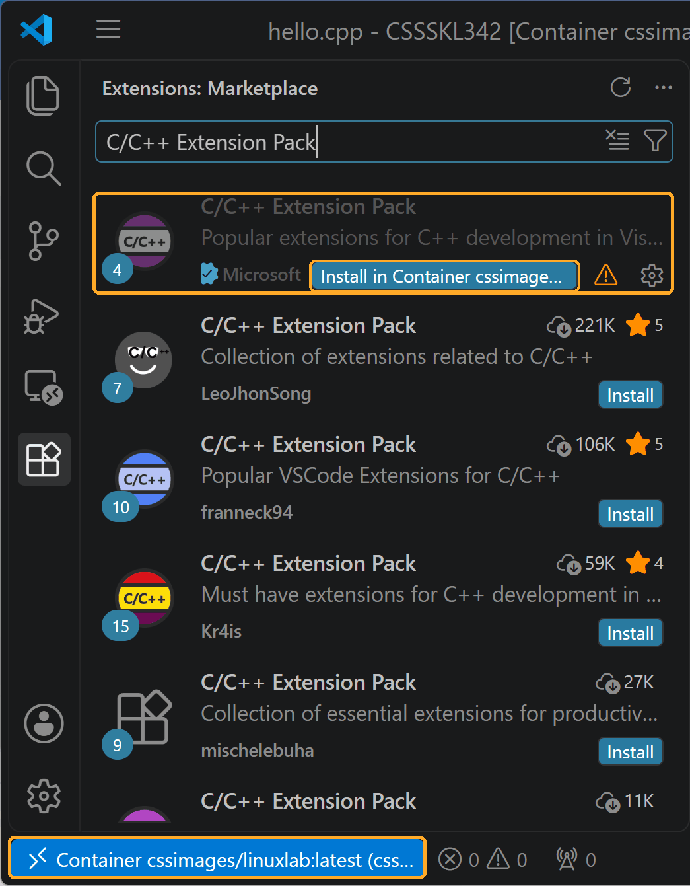
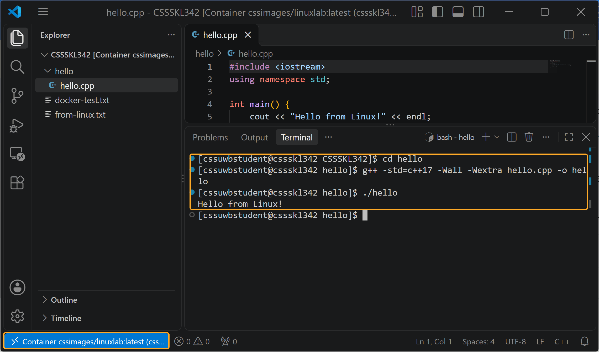

Set up your computer
In CSS SKL 342 you write C++ on your own computer, but compile and run it on Linux with g++, the same setup your CSS 342 assignments are graded on. Docker runs that Linux system (the course image) on your computer, and VS Code is the editor that connects to it. This page installs everything, creates your own Linux container, and ends with you compiling and running a Hello, world program in it. Lab 1 starts from that working setup.
Overview
| Step | Time | You'll end up with |
|---|---|---|
| 1. Install VS Code | 5 min | The editor, with the code command in your terminal |
| 2. Install the extensions | 5 min | C/C++ support and the tools to connect VS Code to a container |
| 3. Install Docker | 15–30 min | Docker Desktop running (Windows may need a restart) |
| 4. Download the course image | 5–30 min | The course Linux system, with g++, make, gdb, valgrind, cppcheck |
| 5. Verify the installation | 10 min | Six checks passed, so you know the installation works |
| 6. Create your container | 10 min | Your own Linux machine, cssskl342, sharing your CSSSKL342 folder, and you know where your files live |
| 7. Connect VS Code to the container | 10 min | VS Code working inside the container, with the C/C++ extension installed there |
| 8. Final test: Hello, world | 10 min | A C++ program compiled and run on Linux, and the C/C++ ▷ button in place |
Terminal commands are given for Windows (use PowerShell: Start menu → type PowerShell) and for macOS (use Terminal: Spotlight → type Terminal). Linux notes are included where they differ. There is nothing to submit: the self-verification checks are for you.
What you need
- A laptop you can install software on (administrator rights). A Chromebook, an iPad, or a locked-down work laptop won't work; see Can't install?
- Windows: Windows 11, or Windows 10 version 22H2, 64-bit. Hardware virtualization must be enabled; checking it is part of step 3.
- macOS: one of the three most recent macOS versions, on an Apple-chip (M1 or later) or Intel Mac.
- At least 8 GB of memory and 15 GB of free disk space. The course image takes about 4.5 GB once downloaded; Docker itself and your work need the rest.
Install VS Code
Download Visual Studio Code from code.visualstudio.com/Download. This is VS Code, the free, cross-platform editor; it is not the same program as Visual Studio.
Windows
- Download the User Installer (x64; choose Arm64 only for a Snapdragon/Arm laptop) and run it.
- On the Select Additional Tasks page, keep Add to PATH checked. It is checked by default, and it is what makes the
codecommand work in PowerShell. - Finish the installer. Close any PowerShell windows that were already open: they won't see the new
codecommand until you open a new one.
macOS
- Download the Universal build, open the downloaded file, and drag Visual Studio Code into your Applications folder. (Running it from Downloads causes update problems.)
- Open VS Code. Press
Cmd+Shift+P, type shell command, and choose Shell Command: Install 'code' command in PATH. - Open a new Terminal window, so it sees the new
codecommand.
Linux
Install the .deb or .rpm package from the download page (or your distribution's package for code). The code command is set up automatically.
code --version prints a version number such as 1.141.0 on its first line. If it says the command is not found, see Troubleshooting.Install the extensions
Install these three extensions, all published by Microsoft. The first two are packs: installing one installs several related extensions.
| Extension | ID | What it gives you |
|---|---|---|
| C/C++ Extension Pack | ms-vscode.cpptools-extension-pack | The C/C++ extension: error squiggles, autocomplete, go-to-definition, and the debugger front end for gdb. Also C/C++ DevTools, C/C++ Themes, and CMake Tools. |
| Remote Development | ms-vscode-remote.vscode-remote-extensionpack | Dev Containers (open a folder inside a container), Remote - SSH (work on the CSS Linux lab machines, the backup plan), WSL, and Remote - Tunnels. |
| Container Tools | ms-azuretools.vscode-containers | The Containers view in the side bar: see your images and containers, start and stop them, and attach VS Code to one. |
Fastest way: paste these three lines into PowerShell (Windows) or Terminal (macOS):
code --install-extension ms-vscode.cpptools-extension-pack
code --install-extension ms-vscode-remote.vscode-remote-extensionpack
code --install-extension ms-azuretools.vscode-containersOr, in VS Code: open the Extensions view (Ctrl+Shift+X, or Cmd+Shift+X on a Mac), search for each name above, check that the publisher is Microsoft, and click Install.
- You may also see an extension called Docker (
ms-azuretools.vscode-docker). It now just installs Container Tools, so you don't need it, but it does no harm. - Don't install Code Runner (the "Run Code" ▷ button), or don't use it for this course. It compiles with its own settings, hides the warnings we turn on, and runs on your computer rather than on Linux.
- Extensions run where your code is. In step 7, when VS Code is connected to the container, you'll install C/C++ a second time, inside the container; that's expected.
- In VS Code, click the Extensions icon in the Activity Bar on the far left (four squares, one tilted), or press
Ctrl+Shift+X(Cmd+Shift+Xon a Mac). - Type
@installedin the search box. - Compare with the screenshot. You should see 13 Microsoft extensions. The three you installed are outlined; the packs brought in the other ten. The small 4 on a pack's logo is the number of extensions it installed.
- Two new icons are now in the Activity Bar (outlined at the top left): Remote Explorer (a monitor) and Containers (a box). Check 6 and step 7 use the Containers one.
The list is alphabetical. Newer versions of VS Code may show a slightly different count or extra items; what matters is that the three outlined extensions, plus C/C++, Dev Containers, and Remote - SSH, are there. If you've used VS Code before, your other extensions will be in the list too.
Check 2 confirms the same thing from the terminal.


@installed after step 2 (Windows; a Mac looks the same). Click to enlarge.Install Docker
Docker Desktop is free for students and personal use. You do not need a Docker account: skip the sign-in screen when it appears.
Windows
- Check virtualization. Open Task Manager (
Ctrl+Shift+Esc), go to Performance → CPU, and look for Virtualization: Enabled under the graph. If it says Disabled, follow the CSS wiki's Enable Virtualization in BIOS first. - Download Docker Desktop for Windows – AMD64 from docker.com/products/docker-desktop (choose ARM64 only for a Snapdragon/Arm laptop).
- Run the installer. Keep Use WSL 2 instead of Hyper-V checked (WSL 2 is the Linux support built into Windows). Restart when it asks.
- Start Docker Desktop from the Start menu. Accept the agreement, choose the recommended settings, and skip the sign-in and survey.
- Wait until the bottom-left corner of the Docker Desktop window says Engine running (green). The first start can take a minute or two.
If Docker Desktop reports that WSL is missing or out of date, open PowerShell as Administrator (right-click → Run as administrator), run wsl --install (or wsl --update if WSL is already there), and restart. If it says you must be in the docker-users group, see Troubleshooting.
macOS
- Find your chip: Apple menu → About This Mac. Chip: Apple M… means Apple silicon; Processor: …Intel… means Intel.
- Download the matching Docker Desktop for Mac (Apple Silicon or Intel chip) from docker.com/products/docker-desktop.
- Open the
.dmgand drag Docker into Applications. Open Docker from Applications. - Accept the agreement and choose Use recommended settings (it asks for your Mac password). Skip the sign-in and survey.
- Wait until the bottom-left corner of the Docker Desktop window says Engine running, and the whale icon in the menu bar stops animating.
Linux
Install Docker Engine for your distribution by following docs.docker.com/engine/install (Docker Desktop for Linux also works). Then let your account run Docker without sudo, and log out and back in:
sudo usermod -aG docker $USERThe course image's user has user ID 1000. If your own ID (id -u) is different, check 5 will fail with Permission denied; see Troubleshooting.
Download the course image
The CSS department publishes an image of the CSS Linux lab, cssimages/linuxlab: Rocky Linux with g++ 11, make, gdb, valgrind, cppcheck, clang-format, and git. It works on Intel/AMD and Apple-chip computers. With Docker Desktop running, download it with:
docker pull cssimages/linuxlabThis shows progress bars for each layer and takes from a few minutes to half an hour, depending on your connection. It ends with a line like Status: Downloaded newer image for cssimages/linuxlab:latest. If the download is interrupted, run the same command again: it picks up where it stopped.
An image is like an installer disk: it doesn't change. In step 6 you'll create a container from it, which is your own copy of that Linux system, with a folder shared with your computer. The CSS wiki's Docker pages describe the image and the container in more detail.
Verify the installation
Run each check in a new PowerShell (Windows) or Terminal (macOS) window, with Docker Desktop running, and compare with the expected output. Only the parts shown matter: version numbers may be newer.
Check 1: VS Code is installed and on your PATH
code --version1.141.0 <- any version number
... (two more lines: a long ID and x64 or arm64)Check 2: the extensions are installed
Windows:
code --list-extensions | Select-String "cpptools|remote-containers|remote-ssh|vscode-containers"macOS and Linux:
code --list-extensions | grep -E "cpptools|remote-containers|remote-ssh|vscode-containers"ms-azuretools.vscode-containers
ms-vscode-remote.remote-containers
ms-vscode-remote.remote-ssh
ms-vscode.cpptools
ms-vscode.cpptools-extension-packCheck 3: Docker can run a container
docker run --rm hello-worldHello from Docker!
This message shows that your installation appears to be working correctly.
...This runs a tiny test container, and --rm deletes it when it finishes.
Check 4: the course image has the C++ tools
The same command works in PowerShell and in the macOS Terminal:
docker run --rm cssimages/linuxlab bash -c 'for t in g++ make gdb valgrind cppcheck; do $t --version | head -1; done'g++ (GCC) 11.5.0 20240719 (Red Hat 11.5.0-2)
GNU Make 4.3
GNU gdb (Rocky Linux) 14.2-3.el9
valgrind-3.23.0
Cppcheck 2.9If it starts downloading instead, step 4 didn't finish: let it complete.
Check 5: the container can share a folder with your computer
This creates the folder you'll keep all your CSS SKL 342 work in, CSSSKL342 in your home folder, and has a short-lived Linux container write a file into it. Step 6 shares this same folder with your own container.
$HOME (or ${HOME})?
It's a variable that holds the path of your home folder, the folder that belongs to your user account and contains your Desktop, Documents, and Downloads folders. The terminal replaces $HOME with that path before running the command. ${HOME} is the same variable; the braces just mark clearly where the name ends when it's followed by other text, as in "${HOME}\CSSSKL342:/work". To see your own home folder, run:
echo $HOMEecho $HOME prints, for example | Finding it in File Explorer / Finder | |
|---|---|---|
| Windows | C:\Users\jsmith | Click in File Explorer's address bar, type %USERPROFILE%, and press Enter. Or go to This PC → Local Disk (C:) → Users → your-name. Your CSSSKL342 folder is there, next to Desktop, Documents, and Downloads. (Tip: right-click it and choose Pin to Quick access, so it's always in File Explorer's side bar.) |
| macOS | /Users/jsmith | In Finder, choose Go → Home (Shift+Cmd+H). Your CSSSKL342 folder is there. (Tip: drag it into Finder's side bar under Favorites.) |
So $HOME\CSSSKL342 means C:\Users\your-name\CSSSKL342 on Windows, and $HOME/CSSSKL342 (or ~/CSSSKL342; ~ is shorthand for home) means /Users/your-name/CSSSKL342 on a Mac. Note that the home folder is not your Desktop or Documents folder: CSSSKL342 sits beside them.
Windows (PowerShell):
mkdir $HOME\CSSSKL342
docker run --rm -v "${HOME}\CSSSKL342:/work" cssimages/linuxlab `
bash -c "echo Docker can write here > /work/docker-test.txt"
Get-Content $HOME\CSSSKL342\docker-test.txtmacOS and Linux:
mkdir -p ~/CSSSKL342
docker run --rm -v "$HOME/CSSSKL342:/work" cssimages/linuxlab \
bash -c "echo Docker can write here > /work/docker-test.txt"
cat ~/CSSSKL342/docker-test.txtDocker can write hereOn Windows, an error from mkdir saying the folder already exists is fine. On a Mac, if Docker asks for permission to access the folder, allow it. You can also open the CSSSKL342 folder in File Explorer or Finder and see docker-test.txt there. (Keep the folder in your home folder, not on a OneDrive- or iCloud-synced Desktop or Documents folder: syncing and Docker sharing don't mix well.)
Check 6: VS Code can see Docker
Open VS Code and click the Containers icon in the Activity Bar on the left (a box; it comes from Container Tools). Expand Images: you should see cssimages/linuxlab. If the view says it can't connect to Docker, start Docker Desktop and click the view's refresh button.
Create your container
The checks above used throwaway containers (--rm deletes them when they finish). Now you create the one you'll use all quarter: a container named cssskl342, made from the course image, that keeps running in the background whenever Docker Desktop is running. You create it once.
Windows (PowerShell). The ` (backquote) at the end of a line continues the command on the next line:
docker run -dit --name cssskl342 -h cssskl342 --restart unless-stopped `
-v "${HOME}\CSSSKL342:/home/cssuwbstudent/CSSSKL342" `
-w /home/cssuwbstudent/CSSSKL342 cssimages/linuxlab:latest /bin/bashmacOS and Linux. The \ at the end of a line continues the command on the next line:
docker run -dit --name cssskl342 -h cssskl342 --restart unless-stopped \
-v "$HOME/CSSSKL342:/home/cssuwbstudent/CSSSKL342" \
-w /home/cssuwbstudent/CSSSKL342 cssimages/linuxlab:latest /bin/bash5ecba266ef5d7411aec0bf0e4274a3fb807e2b680ccc94670d335e243d3f56d2What each part of the command means
-dit | Run in the background (-d) with a terminal kept open (-it), so the container keeps running after the command returns. |
--name cssskl342 | The container's name. You'll use it in every Docker command. |
-h cssskl342 | The Linux machine's host name; it appears in the prompt. |
--restart unless-stopped | Start the container again whenever Docker Desktop starts, e.g. after you restart your computer. |
-v your-folder:/home/cssuwbstudent/CSSSKL342 | Share your CSSSKL342 folder with Linux, at /home/cssuwbstudent/CSSSKL342. The part before the colon is on your computer; the part after is inside Linux. |
-w /home/cssuwbstudent/CSSSKL342 | Start in that folder. |
cssimages/linuxlab:latest /bin/bash | The image to create it from, and the program it runs (the bash shell). |
Check that it's running:
docker psLook for a line with cssimages/linuxlab:latest and the name cssskl342 whose STATUS starts with Up. If you get The container name "/cssskl342" is already in use, you've already created it; see self-test question 4 below.
Inside Linux (VS Code, the terminal, g++) | /home/cssuwbstudent/CSSSKL342 |
| On Windows | C:\Users\your-name\CSSSKL342. In File Explorer, type %USERPROFILE%\CSSSKL342 in the address bar. |
| On macOS | /Users/your-name/CSSSKL342. In Finder, choose Go → Home, then open CSSSKL342. |
/home/cssuwbstudent) exists only inside the container and is lost if the container is removed. Keep all your course work inside CSSSKL342.
Self-check: find your files from both sides
- Open a Linux shell in your container:
The prompt changes todocker exec -it cssskl342 bash[cssuwbstudent@cssskl342 CSSSKL342]$: you are now typing Linux commands. Runpwd(prints/home/cssuwbstudent/CSSSKL342) andls(listsdocker-test.txt, the file from check 5, because it's the same folder). - Still in Linux, create a file, then leave the shell:
echo "made in Linux" > from-linux.txt exit - On your computer, open your
CSSSKL342folder in File Explorer or Finder (see the table above).from-linux.txtis there. - Now the other way: create a file on your computer, in a PowerShell or Terminal window (not the Linux shell). Windows:
macOS:Set-Content $HOME\CSSSKL342\from-my-computer.txt "made on my computer"
Then ask Linux what it sees:echo "made on my computer" > ~/CSSSKL342/from-my-computer.txtdocker exec cssskl342 lsExpecteddocker-test.txt from-linux.txt from-my-computer.txt
Keep these three test files for now: step 7 uses them to show that VS Code opened the right folder. You can delete them after step 7, from either side.
- In VS Code, connected to your container, you save
/home/cssuwbstudent/CSSSKL342/Lab1/main.cpp. Where is that file on your computer?Show answer
In the
Lab1folder inside yourCSSSKL342folder:C:\Users\your-name\CSSSKL342\Lab1\main.cppon Windows,/Users/your-name/CSSSKL342/Lab1/main.cppon a Mac. Everything under/home/cssuwbstudent/CSSSKL342maps to yourCSSSKL342folder. - You save
notes.txtin/home/cssuwbstudent, one level aboveCSSSKL342. Later the container is removed and created again. Isnotes.txtstill there?Show answer
No. Only
CSSSKL342is shared with your computer; everything else in Linux lives only inside that container and disappears with it. Keep your work inCSSSKL342. - You restart your computer. What do you need to do before you can use the container again?
Show answer
Start Docker Desktop and wait for Engine running. Because of
--restart unless-stopped, the container starts by itself;docker psshows it as Up. If it ever isn't, rundocker start cssskl342. - You run the
docker runcommand again and get The container name "/cssskl342" is already in use. What does that mean, and what do you do?Show answer
Your container already exists; you only create it once, so there's nothing to do (use
docker start cssskl342if it's stopped). If you really want a fresh one, remove the old one withdocker rm -f cssskl342and run thedocker runcommand again. Your files inCSSSKL342are safe either way, because they live on your computer.
Connect VS Code to your container
This is how you'll work in every lab: VS Code on your computer, connected to the Linux container, editing files in your CSSSKL342 folder. Do this once now; next time it takes two clicks (see the end of this step).
- Attach VS Code to the container. In VS Code, click the Containers icon in the Activity Bar. Under Containers → Individual Containers, right-click cssimages/linuxlab:latest cssskl342 and choose Attach Visual Studio Code. (The green ▷ means it's running. If it shows a stopped square instead, right-click → Start first.)

- A new VS Code window opens. The first time, a warning says Attaching to a container may execute arbitrary code: click Got It (this is the course image). The first attach takes a minute while VS Code installs its helper inside the container. When it's done, the bottom-left corner says Container cssimages/linuxlab:latest (cssskl342). That label is how you know a window is working in Linux.
- Open your folder. In the Explorer, click Open Folder (or File → Open Folder). Type
/home/cssuwbstudent/CSSSKL342and click OK. If the list then shows the folder's contents instead of opening it, click OK again. The window reloads, and the Explorer shows CSSSKL342 [Container …] with your test files.
- Install C/C++ in the container. Extensions run where your code is, so the container needs its own copy. Open the Extensions view (
Ctrl+Shift+X,Cmd+Shift+Xon a Mac) and search for C/C++ Extension Pack. On the one published by Microsoft (blue check mark), click Install in Container cssimages/linuxlab:latest (cssskl342). Several other packs have the same name; don't install those. You only do this once per container.


g++ and gdb. Without it, VS Code inside the container has no C++ support at all: no error squiggles, no ▷ button, and no debugger (Lab 2).docker exec cssskl342 ls /home/cssuwbstudent/.vscode-server/extensionsms-vscode.cpptools-1.34.4-linux-x64
ms-vscode.cpptools-extension-pack-1.5.1ms-vscode.cpptools, go back to the install step above: make sure the window's bottom-left corner says Container … (cssskl342), and click Install in Container, not plain Install.
Next time: start Docker Desktop, then open VS Code. Use File → Open Recent → CSSSKL342 [Container …], or attach from the Containers view as at the start of this step. Closing the VS Code window does not stop the container.
Final test: Hello, world
In the VS Code window attached to your container (from step 7), with your CSSSKL342 folder open:
- Create the program. In the Explorer, hover over CSSSKL342 and click the New Folder icon; name it
hello. Selecthello, click the New File icon, and name ithello.cpp. Type this program in yourself (don't paste it: typing it is part of the test), and save withCtrl+S(Cmd+S):#include <iostream> using namespace std; int main() { cout << "Hello from Linux!" << endl; return 0; } - Compile and run it in Linux. Open a terminal with Terminal → New Terminal (
Ctrl+`). Its prompt,[cssuwbstudent@cssskl342 CSSSKL342]$, shows it's a Linux shell inside your container. Type:cd hello g++ -std=c++17 -Wall -Wextra hello.cpp -o hello ./helloExpected: no messages from g++, thenHello from Linux!
The final test passed: hello.cpp compiled by Linux's g++and run in the container. Click any screenshot to enlarge it. - Find it on your computer. Open your
CSSSKL342folder in File Explorer or Finder: thehellofolder is there, withhello.cppand the compiled programhello. (Your computer can't runhelloitself: it's a Linux program.)

With hello.cpp open in the editor, look at the top right of the editor (not of the window). You should see a ▷ button with a small ⌄ arrow next to it. Click the arrow: the menu has Run C/C++ File and Debug C/C++ File. You don't need to click them now; Lab 2 uses Debug C/C++ File.
No ▷ button, or no such menu? The C/C++ extension isn't installed in the container: go back to step 7, install it, and check again with the step 7 self-check. (The ▷ button also only appears while a .cpp file is open and selected.)

.cpp file open; yours will show hello.cpp). Click to enlarge.Troubleshooting
| What you see | What to do |
|---|---|
code: not recognized / command not found | Open a new terminal window. Windows: if it still fails, run the VS Code installer again and check Add to PATH. macOS: run Shell Command: Install 'code' command in PATH from the Command Palette (Cmd+Shift+P). |
docker: not recognized / command not found | Open a new terminal window. If it still fails, Docker Desktop didn't finish installing: run the installer again. |
| Cannot connect to the Docker daemon, or error during connect … dockerDesktopLinuxEngine | Docker Desktop isn't running. Start it and wait for Engine running, then try again. |
| Windows: Virtualization support not detected, or Docker Desktop stuck on Starting the Docker Engine… | Check Task Manager → Performance → CPU → Virtualization. If disabled, see Enable Virtualization in BIOS. Then, in PowerShell as Administrator, run wsl --update and restart. |
| Windows: WSL 2 installation is incomplete, or WSL errors | In PowerShell as Administrator: wsl --install (or wsl --update), then restart. |
| Windows: You are not allowed to use Docker, you must be in the "docker-users" group | Search the Start menu for Computer Management and run it as administrator. Go to Local Users and Groups → Groups → docker-users, add your account, then sign out of Windows and back in. (From the CSS wiki's image page.) |
| Linux: permission denied … docker.sock | You haven't logged out and back in since sudo usermod -aG docker $USER. |
docker pull fails with no space left on device | Free up disk space (you need about 15 GB), then run the pull again. |
| Check 5: No such file or directory, or nothing appears in the folder | Check the folder path for typos, and that you ran the mkdir line. Mac: in Docker Desktop, Settings → Resources → File sharing must include your home folder (/Users is included by default). |
| Check 5 or step 6 on Linux: Permission denied | Your user ID isn't 1000. Run chmod 777 ~/CSSSKL342 so the container's user can write there. |
| Step 6: The container name "/cssskl342" is already in use | You already created it. Use docker start cssskl342 if it isn't running. To start over: docker rm -f cssskl342, then the docker run command again (your CSSSKL342 files are safe). |
Step 6: docker ps doesn't list cssskl342 | It's stopped. docker ps -a lists stopped containers too. Run docker start cssskl342. |
| Step 7: no Attach Visual Studio Code in the menu, or the container isn't listed | Check that Container Tools is installed (step 2) and Docker Desktop is running, then click the Containers view's refresh button. In the Command Palette (Ctrl+Shift+P), Dev Containers: Attach to Running Container… does the same thing. |
| Step 7: the Explorer doesn't show your test files | You opened a different folder. Use File → Open Folder and type /home/cssuwbstudent/CSSSKL342 exactly (capital letters matter in Linux). |
Step 8: the terminal prompt looks like PS C:\…> or you@your-mac ~ % | That terminal is on your computer, not in Linux: you're in the wrong VS Code window. Use the window whose bottom-left corner says Container … (cssskl342). |
Step 8: g++: command not found | Same cause as the row above: that terminal isn't in the container. |
| Step 8: no ▷ button, or no Run/Debug C/C++ File in its menu | C/C++ isn't installed in the container. In the attached window, open Extensions, search C/C++ Extension Pack (Microsoft), and click Install in Container; then check with the step 7 self-check. The button only shows while a .cpp file is open. |
| Mac: Docker says it can't run on this computer, or is very slow | You probably downloaded the build for the other chip. Delete Docker from Applications and install the one that matches About This Mac. |
Can't install?
If your computer can't run Docker (a Chromebook, a computer without virtualization, a work laptop you can't install on) or you run out of time, use the CSS remote Linux lab instead. It has the same tools, and VS Code connects to it with the Remote - SSH extension from step 2 instead of Docker. Follow the CSS wiki's How to access the Linux lab and SSH key setup, and check that g++ --version works there.
You still need VS Code (step 1) and the Remote Development pack (step 2) on the computer you bring. Skip steps 3–6. In a VS Code window connected to the Linux lab over SSH, install C/C++ as in step 7 (over SSH, the button says Install in SSH instead of Install in Container), then do the final test (step 8) in a CSSSKL342 folder in your Linux lab home directory.
Ready for Lab 1
- All six checks in step 5 matched.
- Your container
cssskl342shows as Up indocker ps, and you can say where/home/cssuwbstudent/CSSSKL342is on your own computer. - The C/C++ extension is installed in the container (step 7 self-check).
- In VS Code attached to the container,
hello.cppcompiled with no messages and printedHello from Linux!, and the ▷ button offers Run C/C++ File and Debug C/C++ File.
Lab 1 begins in your running container, with VS Code attached (it starts with a Linux command warm-up), so bring your laptop (and charger) with all of this working. Stuck? Send your instructor the exact error message before Lab 1.
For your info: Open code in VS Code
Nothing to do now. From Lab 1 on, every link to a .cpp or .h file on a lab page has a small open in VS Code link next to it, and the very last item in each lab page's left menu, Open code in VS Code, holds its settings. The link opens that file in VS Code, attached to your container, so you can read or run an example without hunting for it. For it to work:
- Start Docker Desktop and your container. Docker Desktop shows Engine running, and
docker start cssskl342(in PowerShell or the Mac Terminal) starts your container;docker pslists it as Up. - Extract that lab's starter zip into your
CSSSKL342folder, as each lab's Before lab says, so you haveCSSSKL342/Lab1/exercises/andCSSSKL342/Lab1/examples/(and so on for each lab). The link opens the file at that place inside the container:/home/cssuwbstudent/CSSSKL342/Lab1/.... A file you haven't extracted can't open. - Click an open in VS Code link. The browser asks whether to open Visual Studio Code: allow it (you can tick the box to always allow it for this site). VS Code opens a window attached to
cssskl342and asks whether to open the file: click Yes. - Used other names in step 6? If your shared folder or your container has a different name, open Open code in VS Code at the bottom of a lab page's left menu and type the folder that holds your
LabNfolders (as Linux sees it) and your container's name. The browser remembers them; Reset to the Pre-Lab setup puts back/home/cssuwbstudent/CSSSKL342andcssskl342.
CSSSKL342 (step 2), or VS Code's Dev Containers extension is missing (Pre-Lab step 2, Install the extensions). The links are only a shortcut: you can always open the same files in VS Code, attached to the container, with File → Open Folder… and /home/cssuwbstudent/CSSSKL342/LabN.